Scientific Classification
| Kingdom | Animalia | Animal | Animals |
|---|---|---|---|
| Phylum | Chordata | Chorda | Corded |
| Clade | Archosauria | ᾰ̓́ρχων + σαῦρος | Ruling Lizards |
| Clade | Avemetatarsalia | avis + μετᾰ́ + τᾰρσός | With Bird Metatarsals |
| Clade | Dinosauria | δεινός + σαῦρος | Terrible Lizards |
| Clade | Ornithischia | ὄρνῑς + ῐ̓σχῐ́ον | Bird Hipped |
| Clade | Neornithischia | νέος + ὄρνῑς + ῐ̓σχῐ́ον | New Bird Hipped |
| Clade | Pyrodontia | πῦρ + ὀδούς | Fire Toothed |
Taxonomic note: The taxonomy of Kaimere's thescelosaurs remains contentious. Although the name originally derives from the relatively small ornithischian dinosaurs known from Earth, its application in Kaimere encompasses a diverse assemblage of lineages whose evolutionary relationships are not fully resolved.
01 · INTRODUCTION
Overview
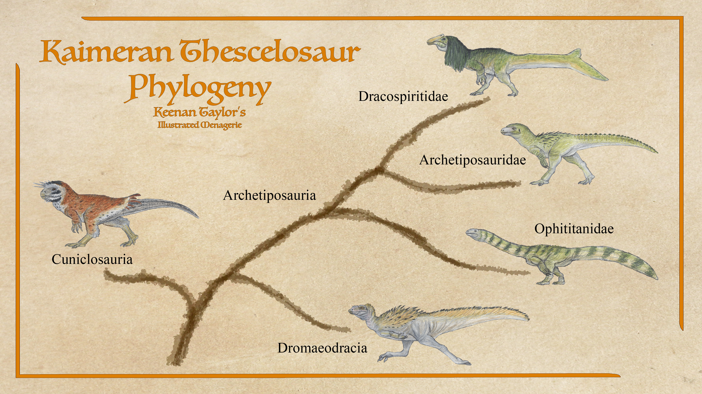
The thescelosaurs of Kaimere represent one of the most remarkable examples of adaptive radiation among the planet's introduced dinosaur lineages. Descended from small, predominantly terrestrial ornithischians that originated on Earth during the Mesozoic, these dinosaurs initially occupied relatively inconspicuous ecological niches as small herbivores and omnivores. Their modest size, generalized diets, and burrowing adaptations allowed them to survive in environments where larger animals faced intense competition and predation. Following the Dynastic Extinction however, the thescelosaurs underwent an extraordinary evolutionary expansion, particularly across the forests of Ni'Khar. Within approximately half a million years of the catastrophe, their descendants had diversified into a variety of forms, ranging from tiny burrowing animals to enormous herbivores weighing several tons.
The Dynastic Extinction fundamentally altered Kaimere's terrestrial ecosystems. Prolonged volcanic activity, widespread fires, toxic atmospheric conditions, and the contamination of waterways devastated the established megafauna. Tyrannosaurs, hadrosaurs, sauropods, and ceratopsids disappeared from much of the Known World, leaving ecological vacancies that smaller, more resilient animals were able to exploit. Burrowing thescelosaurs were particularly well suited to surviving the disaster. Their ability to shelter underground, combined with their capacity to subsist on relatively small quantities of hardy vegetation, allowed populations to persist through periods when larger herbivores could no longer obtain sufficient food or escape environmental hazards.
The recovery that followed created an abundance of new habitats. Nutrient-rich soils supported rapidly expanding forests, while the disappearance of the dominant herbivores allowed vegetation to develop with fewer constraints. Thescelosaurs responded with an extensive radiation that produced several major lineages, each exploiting different combinations of body size, diet, locomotion, and social behavior. In Ni'Khar, two particularly successful groups emerged: the archetiposaurs and the cuniclosaurs. The former diversified into generalized omnivores, nest-building species, high browsers, and enormous herbivores, while the latter became highly specialized burrowers that occupy a wide range of terrestrial habitats.
Other thescelosaur lineages developed along different evolutionary trajectories. The ophititans, a family of thescelosaurs within the archetiposaur clade, evolved elongated necks and a strong association with waterways, producing forms that range from small omnivorous river dwellers to giant island browsers. Dromaeodracids, originating in Kairulr, retained a different evolutionary history and include the sailback runnendrake of the Known World. Additional groups, including the cat drakes and the enormous qotaur, demonstrate the breadth of ecological roles that thescelosaurs have acquired.
Despite their diversity, many thescelosaurs retain characteristics associated with their small-bodied ancestors. Feathering is widespread, although its density and structure vary among lineages. Burrowing remains important in several groups, and even species that have become too large to hide in small underground refuges often retain behaviors associated with nest construction, territorial defense, and the use of sheltered habitats. Their diets are similarly flexible: although many species are predominantly herbivorous, numerous forms consume insects, eggs, carrion, and small animals when opportunities arise.
Thescelosaurs are consequently among the most ecologically versatile dinosaurs in modern Kaimere. Their success is especially pronounced in Ni'Khar, where their descendants occupy niches once held by hadrosaurs and other large herbivores. In Kairul, by contrast, pachycephalosaurs generally became the dominant large-bodied herbivorous radiation following the extinction of the older megafauna. Thescelosaurs remain diverse there, but their evolutionary expansion did not reach the same extremes as that of their Ni'Khari relatives.
02 · DEEP TIME
Evolutionary History
Earth Origins and the Survival of Small-Bodied Lineages
The ancestors of Kaimere's thescelosaurs originated among the small ornithischian dinosaurs of the Earth Mesozoic. Unlike several other dinosaur groups that began as relatively small animals before evolving enormous representatives, many thescelosaur lineages remained modest in size throughout much of their evolutionary history. Even the largest members of the familiar Earth genus Thescelosaurus reached only around four meters in length and approached 300 kilograms, while genera such as Orodromeus, Zephyrosaurus, and Oryctodromeus were considerably smaller.
These diminutive dinosaurs nevertheless possessed several characteristics that proved advantageous in Kaimere. Both thescelosaurines and orodromines have been proposed to possess adaptations associated with digging or burrowing. Such behavior provided refuge from predators and environmental extremes while allowing animals to exploit underground plant material and other food resources. The possibility of a feathered covering, suggested by comparisons with other early ornithischians such as Kulindadromeus, further indicates that at least some ancestral forms may have possessed effective insulation.
The small size and generalized ecology of these dinosaurs were particularly important in Kaimere's competitive ecosystems. Larger introduced herbivores and predators frequently occupied the most conspicuous ecological niches, leaving smaller animals to exploit the resources that remained. Thescelosaurs were not required to displace these dominant species to survive. Instead, they could forage among low-growing vegetation, shelter in burrows, and exploit food sources that were less accessible or energetically inefficient for larger animals.
Their introduction to Kaimere established the evolutionary foundation for the radiation that followed. Although the exact relationships among the major thescelosaur lineages remain disputed, their shared history of small-bodied terrestrial ancestry provides a plausible explanation for the persistence of burrowing adaptations across several otherwise very different groups.
The Dynastic Extinction and the Rise of Ni'Khari Thescelosaurs
The Dynastic Extinction, approximately fifteen million years ago, marked the decisive turning point in thescelosaur evolution. Unlike the comparatively abrupt extinction event at the end of the Cretaceous on Earth, this catastrophe unfolded over centuries, with alternating periods of severe devastation and temporary recovery. Extensive volcanic activity opened enormous geological fractures across Arvel, Ni'Khar, and Kairul, producing widespread lava flows, ashfall, toxic atmospheric conditions, and the destruction of forests and wetlands.
The largest animals were particularly vulnerable. Tyrannosaurs and their hadrosaur prey, which had dominated terrestrial ecosystems for more than fifty million years, were among the earliest major groups to disappear. Giant sauropods succumbed to the toxic atmosphere, while ceratopsids perished as their wetland habitats became choked with ash and sediment. Forest fires and the collapse of plant communities further reduced the resources available to surviving animals. Subsequent algal and magic blooms, fueled by nutrients released into waterways, caused additional ecological disruption.
The animals most likely to survive were those capable of sheltering in burrows or other protected spaces and subsisting on the limited vegetation that remained. Small thescelosaurs were exceptionally well suited to these conditions. Their underground refuges offered protection from fire, ash, and many predators, while their modest energy requirements allowed them to survive on food supplies that could not sustain large herbivores.
When the volcanic activity finally subsided, most animals weighing more than approximately one hundred pounds had disappeared from the affected ecosystems. The resulting absence of large herbivores created an extraordinary opportunity for surviving thescelosaurs. As forests regenerated in the nutrient-rich soils, populations expanded rapidly into newly available habitats.
Within approximately half a million years, the forests of Ni'Khar supported an abundance of large dinosaurs descended from these small survivors. These were not the hadrosaurs and sauropods that had dominated the preceding world, but members of the thescelosaur radiation. Their success illustrates how the extinction of dominant competitors can permit relatively inconspicuous lineages to become major ecological forces.
The Origins and Classification of the Major Lineages
The principal Ni'Khari thescelosaur radiations are represented by the archetiposaurs and cuniclosaurs. Traditionally, these groups have been considered closely related and are sometimes placed together within a single order, while the dromaeodracids of Kairul are treated as a separate thescelosaur lineage. This classification has become increasingly controversial as genetic evidence has suggested that archetiposaurids may be more closely related to dromaeodracids than to cuniclosaurs.
One proposed interpretation is that archetiposaurids and dromaeodracids descend primarily from thescelosaurine ancestors, whereas cuniclosaurs originated among the orodromines. Under this hypothesis, the two Ni'Khari radiations do not constitute a single exclusive evolutionary group, but instead represent separate descendants of early thescelosaur lineages. Their common ancestry would extend back into the Early Cretaceous or potentially the Late Jurassic, making their separation considerably older than their modern ecological diversity might suggest.
The classification is further complicated by the elasmarian dinosaurs, including the dro'khel and other runnendrakes of Arvel. These animals resemble several Known World dromaeodracids and were historically grouped with them, but they are more distantly related. Elasmarians originated in the Arvelith region and belong among the true ornithopods, demonstrating that similarities in body form and lifestyle do not necessarily indicate close ancestry.
These disagreements reflect the difficulty of reconstructing thescelosaur evolution in a world where multiple introduced lineages have undergone extensive adaptive radiation. Burrowing, feathering, small-bodied ancestry, and similar ecological pressures have produced convergent characteristics in several groups. Until their relationships are fully resolved, the traditional groupings remain useful for describing their ecology, but should not be assumed to represent a definitive evolutionary classification.
Ecological Significance
The thescelosaurs of Kaimere illustrate how a lineage of small-bodied dinosaurs can become one of the defining components of a continent's fauna without following a single evolutionary trajectory. The Dynastic Extinction removed much of the established megafauna, but the subsequent recovery did not simply recreate the ecosystems that had existed before the catastrophe. Instead, surviving lineages expanded into the vacant niches and developed new ecological relationships.
In Ni'Khar, thescelosaurs became major herbivores and omnivores, replacing some of the ecological functions once performed by hadrosaurs and other large dinosaurs. In Kairul, they remained more restricted in body size and diversity, sharing the recovering ecosystems with pachycephalosaurs and other groups. Across both continents, burrowing species continue to exploit underground refuges, while giant forms shape vegetation through browsing and competition with large mammals.
Their relationships with other animals are equally diverse. Small cuniclosaurs provide prey for numerous predators, yet their burrow systems offer refuge from the same threats. Common drakes can defend themselves against many carnivores and coexist with grazing mammals, while giant qotaur compete directly with large ground sloths. Ophititans exploit aquatic environments that are less accessible to many terrestrial herbivores, and specialized forms such as the goatbird survive through speed and camouflage.
The thescelosaurs are therefore not simply a group of dinosaurs that grew large after the Dynastic Extinction. They are an expansive radiation whose members have succeeded through multiple strategies, including burrowing, social cooperation, defensive specialization, dietary flexibility, and the exploitation of habitats left open by ecological upheaval. Their history is among the clearest examples of how Kaimere's evolutionary landscape is shaped not only by the arrival and extinction of dominant animals, but also by the remarkable capacity of surviving lineages to occupy the worlds left behind.
03 · SPECIES ACCOUNTS
Known Diversity
The following accounts document representative felids recorded in the encyclopedia. Select a species to consult its individual natural history and descriptive account.
Cuniclosauridae
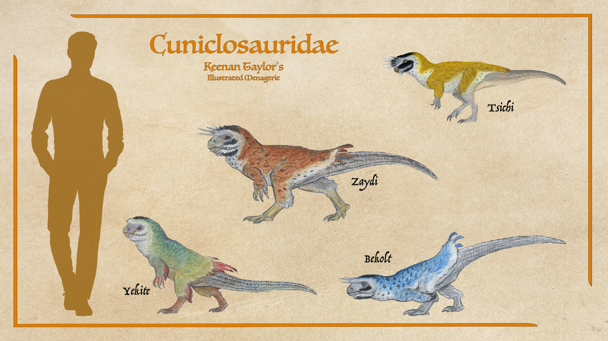
Cuniclosauridae
Cuniclosaurus are fossorial, digging complex burrows. Seven genera with as many as forty-nine species are found throughout the Known World, and others are reported beyond. They live in loose colonies of related females and their mates. Most species are monogamous and mate for life, though some have a few males in the colony and form more of a harem troop. In monogamous the only difference between the sexes is a slightly larger average size in males. In troop species, males are proportionally larger and a bit more aggressive with each other. Males of all species are highly aggressive with intruders. While this has given them a reputation for ferocity, a violent response to potential predators is territorial and only present at the burrow. When foraging, they flee danger.
Read Tsichi article → Read Yekite article → Read Zaydi article → Read Durfel article → Read Bekolt article →Grukan
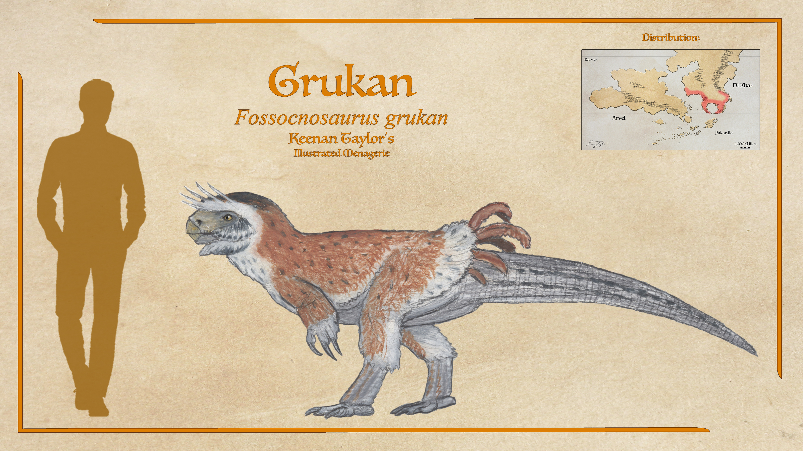
Fossocnosaurus grukan
The largest of the cuniclosaurs is the grukan. Like their smaller cousins they dig deep and complex burrows. Though found throughout the Crescent, they are most common in the highlands of the peninsula. Their range also expands up north.
Read species article →Common Drake
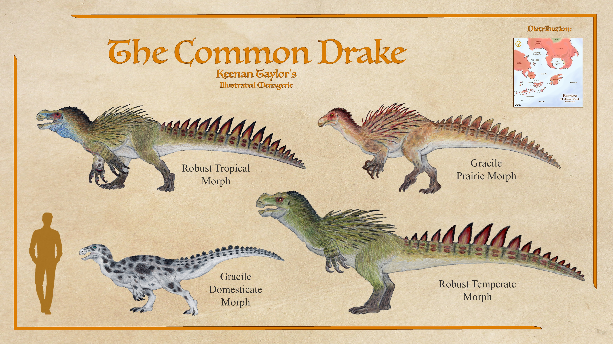
Hystronyx vulgaris sp.
The most abundant genus of archetiposaurids is the common drake Hystronyx vulgaris. The common drake as its name implies, the non-avian dinosaur most often encountered in the Known World. They are generalist omnivores, eating mostly horsetails, ferns, fruit, and nuts, but are known to eat grass, carrion, and small game when their preferred food is not in abundance. When their preferred food is present, however, they readily cohabitate with mammals that specialize in angiosperms, and it is often noted that common drakes tend to provide an element of peace while sharing this space. Common drakes are especially comfortable living with grazing sloths, deer, and kangaroos, but they are less tolerant of other browsers and specialists in ferns and horsetails. In Titan Gardens, where the titanosaurs regularly make fern and grass meadows with their gardening, common drakes and deer are especially successful, and this trio is often considered a hallmark of a healthy forest. Common drakes are proficient swimmers and can make home in a wide range of humidities and temperatures, a key to their widespread success.
Read Arvelith Common Drake article →Qotaur
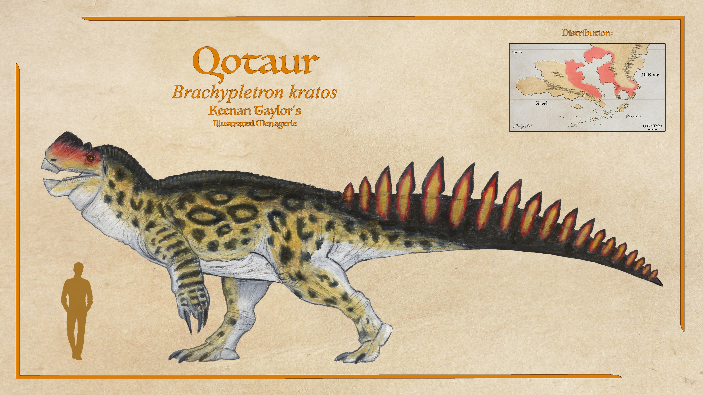
Brachypletron kratos
A sister genus of Hystronyx is found in the forests of Arvel and Ni'Khar, and has taken the increased size approach to an extreme. The qotaur is of staggering proportions, with the largest males reaching twelve meters in length and ten tons in mass. Despite this bulk, qotaur are still bipedal thanks to massive tail muscles keeping their balance at the hips. Qotaur live in herds of related cows defended by a single bull. Like the common drake, they have highly versatile diets, though given their size they tend to be stricter herbivores and bulk feed on whatever vegetation is available. Both sexes are aggressive, probably because they're too slow to flee zentaur and other predators in their habitat. Their claws are mostly used against other qotaur but are well documented in fights against zentaur and competing herbivores such as the hukolgur.
Read species article →Builder Drake
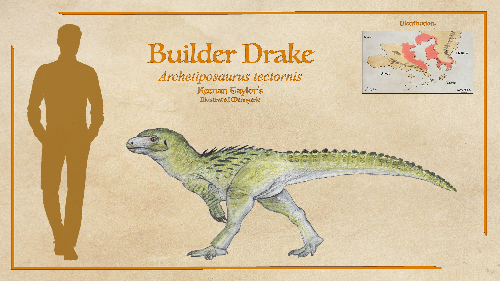
Archetiposaurus tectornis
Archetiposaurus is, at around two meters, analogous in size to their ancestors. The clade are also called builder drakes, and while all will clear nest areas and construct a pen of sorts, species of Archetiposaurus take this habit to an extreme. Using debris, they will sometimes even weave together fences or lodges in which they lay their nests. These constructions are often mistaken for Kaimeran settlements. The designs are built on instinct, not innovation, but their complexity has certainly not gone unnoticed. Like the common drake, Archetiposaurus has sharp plates on their tail and quills on the torso, though both are comparatively subdued. Their main defense is running, which they are able to do faster and longer than their larger cousins. They are not eusocial, but live in relatively large groups of a few dozen.
Read species article →Chienash
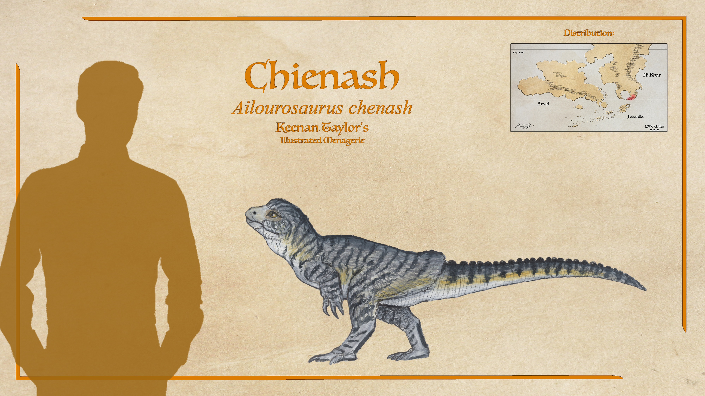
Ailourosaurus chenash
This lineage also has a small domesticated species: the cat drake or chienash. Though there are many species in their tribe of little thescelosaurs, the chienash domesticated by mountain Telmede is by far the most popular pet dinosaur throughout the Known World. A nest-guarding instinct has manifested in them being persistent and aggressive mousers. They still eat grain, so aren't as popular as cats for vermin disposal and stock protection, but their intelligence, playfulness, and inclination to bond with whatever animals they live with make them popular pets. They lack the aggression of wild drakes, further improving their popularity.
Read species article →Thompson's Goatbird

Ailourosaurus sp.
They also have a larger relative living in the jungle siting beneath the south-eastern face of the Eastern Telmede Mountains. The Thompson's goatbird, is a two to three-meter cousin of the chienash. These aren't as well armed or defended as cougar sloths, but they are fast and extremely nimble, able to effortlessly scale and navigate uneven terrain. Catching this prey is when ammut's comparisons to big cats come into play. They may not be able to keep chase for long, but with a well-executed ambush, they can accelerate faster and catch up as long as they aren't detected. Their green hide helps them blend into the moss which covers the ground, rocks, and trees when stalking these dinosaurs, which also have excellent color vision.
Read species article →Greater Seridic Serpent Drake
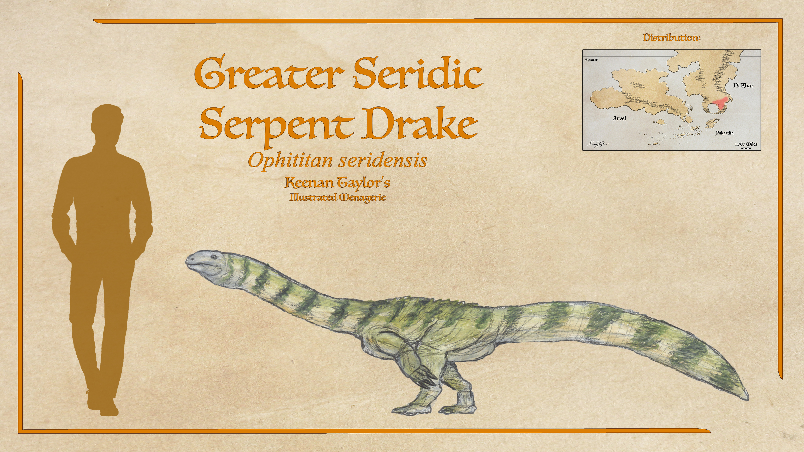
Ophititan seridensis
The greater Seridic serpent drake is compact and surprisingly muscular, with relatively short but robust hindlimbs supporting a long counterbalancing tail. They are 2 to 2.5 meters long, and nearly half the animal's total length consists of its neck and tail. The skull is extremely narrow, ending in a small keratinous beak ideal for selecting individual leaves and fruits. Compared to other serpent drakes, the head is unusually blunt, allowing stronger bite forces for crushing freshwater mollusks and crabs. The forelimbs remain long and muscular, terminating in three large hooked claws. These are used to pull floating vegetation toward the mouth, rake apart fallen logs for crustaceans, and anchor the body while feeding in muddy riverbanks.
Read species article →Kasktaur
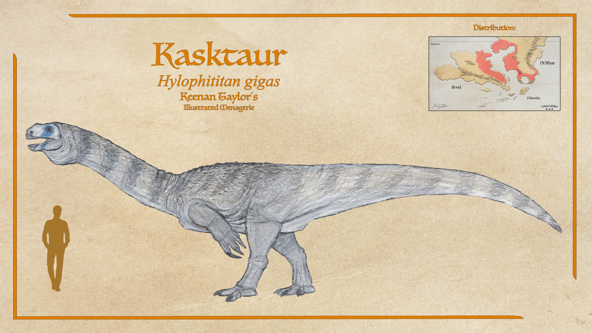
Hylophititan gigas
Hylophititan, or the kasktaur, is a terrestrial serpent drake. Though far lighter than a qotaur of the same length, their ten to twelve meter bulls are still quite impressive. It was they who are most often compared to Plateosaurus. Kasktaur live in larger herds than most thescelosaurs, and males are much more tolerant of each other outside of the mating season. They prefer to be high browsers, feeding above the competition, though are quite happy to forage anything within range of their long necks.
Read species article →Sailback Runnendrake
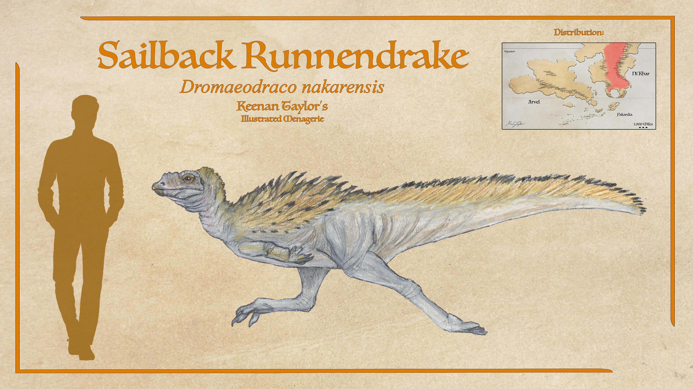
Dromaeodraco nakarensis
The sailback runnendrake dig simple burrows, though they wander far while foraging, and their dens are often temporary and only used for a few weeks. This mobility compared to the conventional dens of most thescelosaurs being more permanent is theorized to be why this species made the passage across the land bridges which periodically formed during the sea level fluctuations up north within Kaimere's ancient history. They are hardly the fastest dinosaur, being slower than elasmarian runnendrakes and young uktan, though they are quite agile and hard to catch, and even their simple dens are often deep enough that they can reliably hide from predators.
Read species article →Common Tarasque
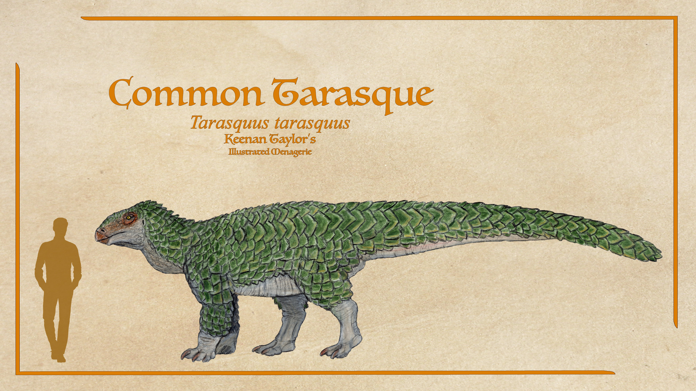
Tarasquus tarasquus
Tarasquus is a genus of quadrupedal neornithischians of unknown placement, with their feathers hardened into pangolin-like scales. Most are around a hundred kilos, but the common tarasque can reach 8 meters in length, and the greater tarasque exceed 12. Predators avoid the tarasques for the most part, as their sharp-edged feathers make them an unappealing prospect, but entelodonts like the guka mu bakamu are among the predators that can get through the armor of all but adults in larger species like this.
Read species article →04 · CLASSIFICATION
Taxonomic Notes
The classification of Kaimere's thescelosaurs remains disputed. The term encompasses several lineages historically grouped together because of their shared small-bodied ornithischian ancestry, broadly similar anatomy, and, in many cases, burrowing adaptations. However, more recent genetic studies have challenged the traditional arrangement, suggesting that some of the most familiar groups are less closely related than their external similarities imply.
The traditional classification places the archetiposaurs and cuniclosaurs within a closely related assemblage, sometimes designated as a distinct order of Ni'Khari origin. Under this arrangement, the dromaeodracids of Kairul represent a separate lineage of thescelosaurs. This interpretation emphasizes the similarities between the two principal Known World groups and their apparent divergence from the Kairulan fauna.
Genetic evidence has instead suggested a closer relationship between dromaeodracids and archetiposaurids, with cuniclosaurids branching off more distantly. One proposed interpretation is that archetiposaurs and dromaeodracids descended from thescelosaurine ancestors, whereas cuniclosaurs originated from orodromine ancestors. If this hypothesis is correct, the divergence between these groups may extend as far back as the early Cretaceous or even the late Jurassic. Their shared characteristics would therefore reflect a much older common ancestry rather than membership in a single, relatively recent evolutionary radiation.
The distinction is complicated further by the elasmarians, including podakornids like dro'khel and bonnethead runnendrakes. These dinosaurs were historically grouped with the Kairulan dromaeodracids because of their similar appearance and ecological roles. However, elasmarians are of Arvelith origin and belong to the true ornithopods, making them considerably more distantly related than their superficial resemblance suggests. The sailback runnendrake, once assumed to be an elasmarian, has likewise been reassigned to a Kairulan dromaeodracid lineage.
The ophititans present another historical taxonomic problem. Their elongated necks, relatively small heads, and general body proportions were once interpreted as evidence of ancestry among basal sauropodomorphs, particularly animals resembling Plateosaurus. This hypothesis persisted among Assembly naturalists for much of the twentieth century. Skeletal similarities appeared to support the interpretation, but their ornithischian hip structure provided a major contradiction. Later genetic studies placed the ophititans among the thescelosaurs, with evidence suggesting that they form a sister clade to the common drakes.
Consequently, the classification of Kaimere's thescelosaurs should be treated as provisional at the higher taxonomic levels. Shared common names, similar body plans, and ecological resemblance do not necessarily indicate close evolutionary relationships. Conversely, substantial anatomical differences may obscure relationships between lineages that diverged millions of years ago. The precise boundaries of the major clades remain subject to revision as additional fossils, genetic evidence, and comparative anatomical studies become available.